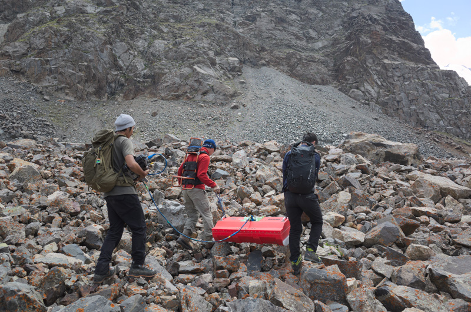
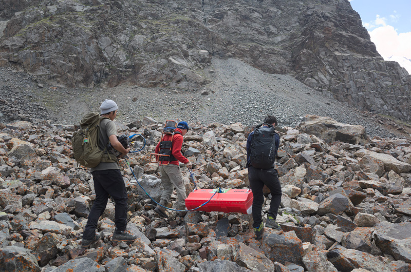
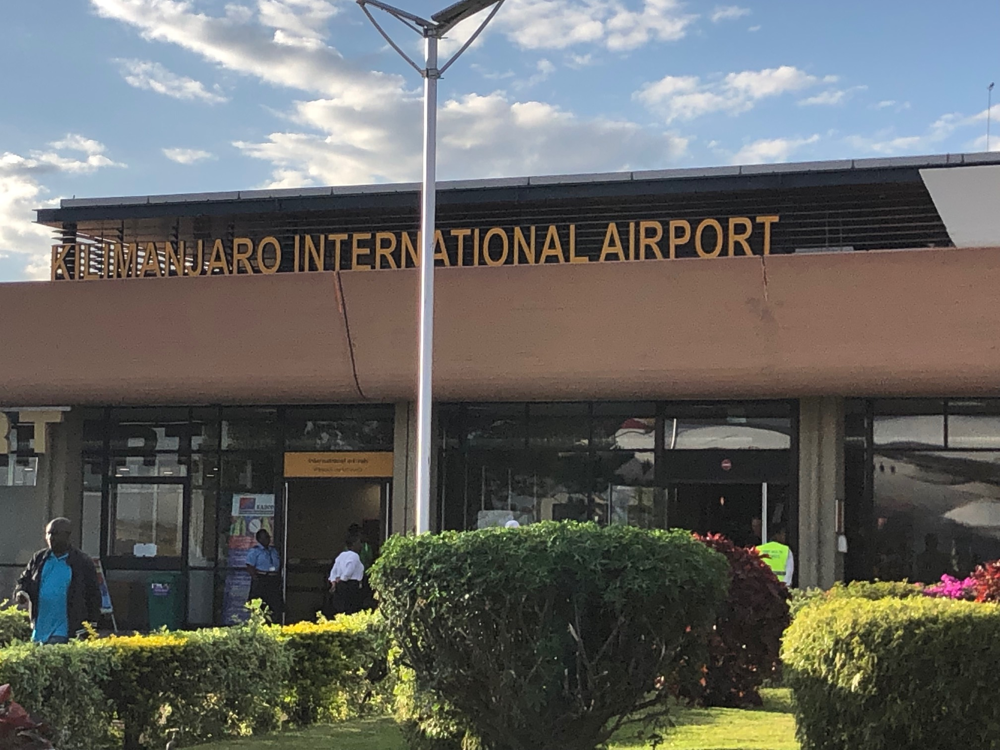
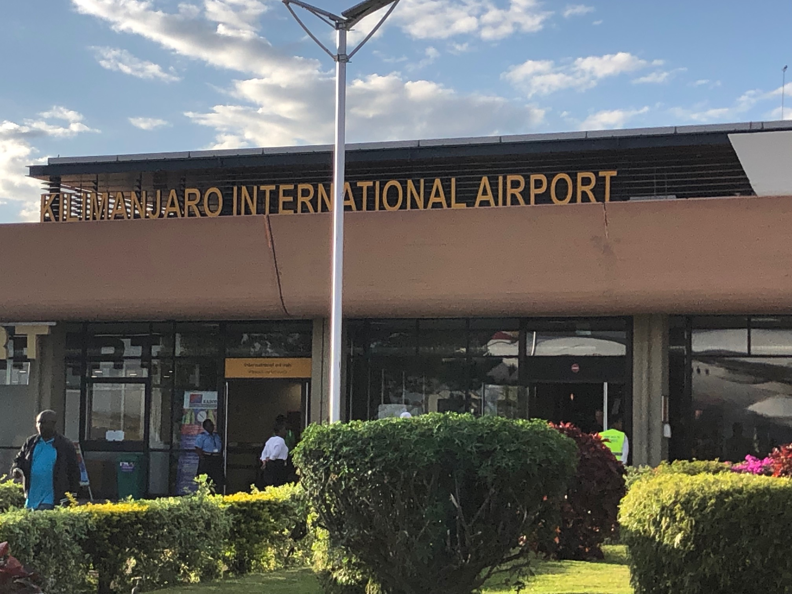

キルギス・天山山脈
中央アジアのキルギスに位置する天山山脈では，わずか数カ月で出現・出水する短命氷河湖の出水で生じる土石流により，犠牲者を伴なう災害が発生しています．当研究室では，この地域の短命氷河湖の調査をおこない，世界ではじめてその実態や形成過程を報告しています．また，短命氷河湖の出現に絡む山岳永久凍土の存在指標である岩石氷河の調査も同時に進めています．2015年に地元住民を対象とした氷河湖ワークショップを開催したり，キルギス緊急対策省と共同で氷河湖モニタリングに取り組んでいます．


 



ネパール・ランタン谷
2015年4月28日にネパールで生じたゴルカ地震では，都市部だけでなくヒマラヤの山岳地域でも大きな被害が報告されました．ランタン谷では，ランタン・リルン峰から崩れた氷河や積雪が岩屑と混ざりあった「雪氷岩屑なだれ」が生じ，ランタン村にいた約350名が犠牲となりました．2015年以降毎年11月にヘリコプターからランタン・リルン峰の岩壁斜面に張り付く懸垂氷河の空撮画像を取得し，画像から作成した3D地形モデルによって懸垂氷河の崩落の特徴を調べています．


アルゼンチン・中央アンデス
中央アンデスは非常に乾燥しており，永久凍土を含む岩石氷河からの融氷水も貴重な水資源です．この地域の岩石氷河の空間分布と流動のモニタリングを実施しました．


インド・ラダック地方
インド北西部のチベット文化圏のラダック地方において，氷河湖災害の調査をおこなっています．2017年8月にはアチナータン村上流で氷河湖出水により生じた土石流により3名の犠牲者が出ています．2012，2014，2015年に地元住民を対象とした氷河湖ワークショップを3つの村で開催しています．


ケニア山・キリマンジャロ
赤道付近に位置するケニア山とキリマンジャロの氷河を対象に，温暖化の影響で消えゆく小規模氷河の質量収支のモニタリングをおこなっています．消えゆく氷河の結末はいかに．．．


 


南極・ラングホブデ氷河
第63次南極観測隊員として現地調査予定（2021年11月～2022年3月）